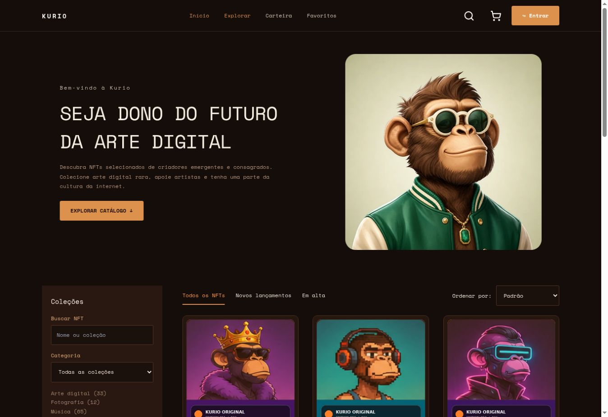
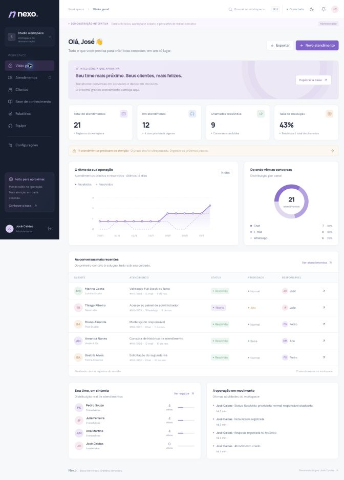
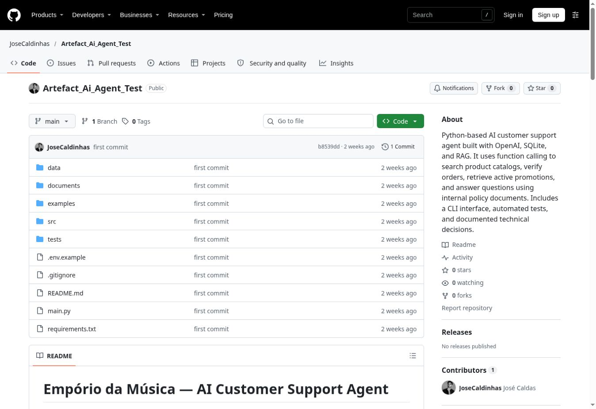
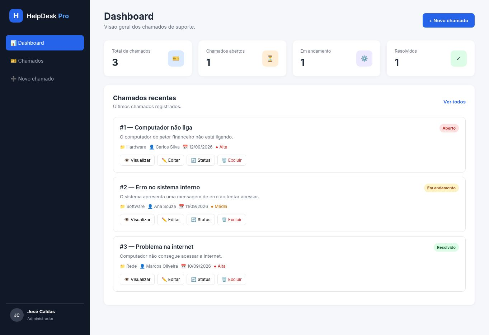
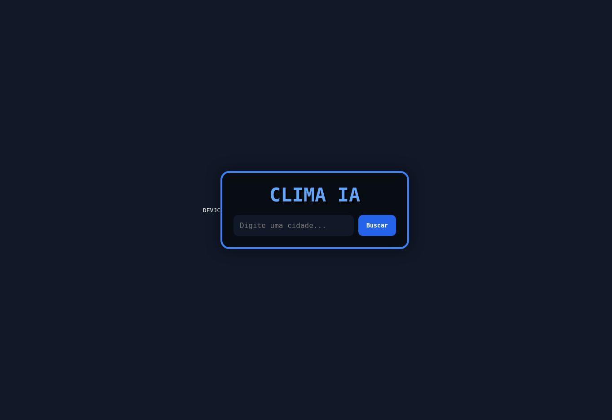
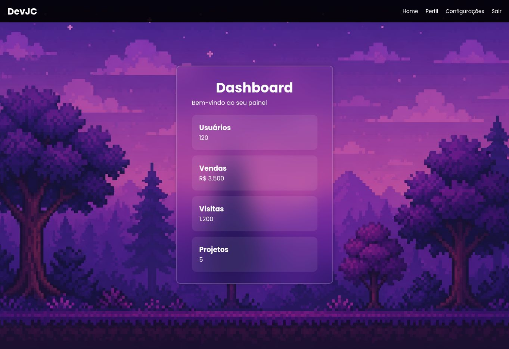
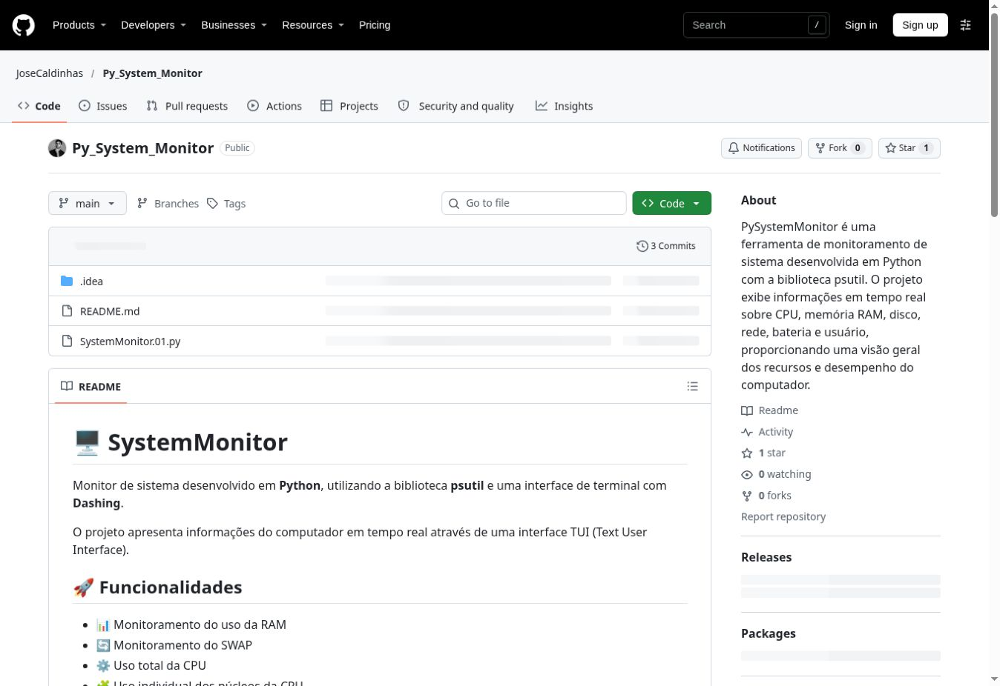
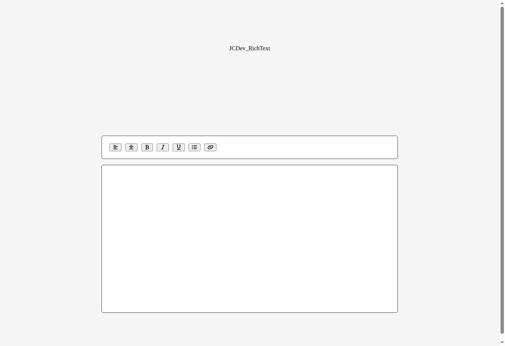
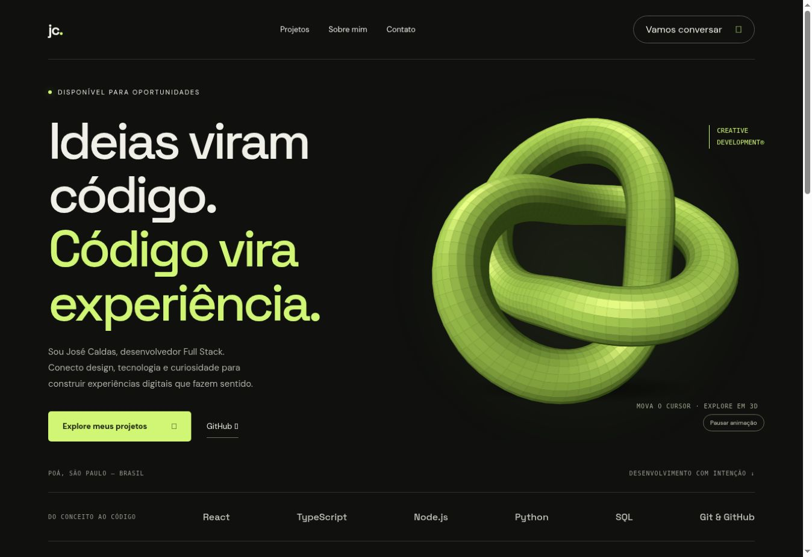

Captura do siteNFT Marketplace
React · TypeScript · TanStack · Playwright
Catálogo de NFTs, autenticação, carrinho e checkout simulado.
CÓDIGO, PRÁTICA E EVOLUÇÃO
Uma coleção do que venho construindo: interfaces, aplicações completas e ferramentas para resolver problemas. Explore cada projeto e conheça o código.

Captura do siteReact · TypeScript · TanStack · Playwright
Catálogo de NFTs, autenticação, carrinho e checkout simulado.

Captura incluída no repositórioReact · TypeScript · SQLite / D1
Gestão de clientes, chamados, permissões e relatórios.

Captura do repositório · aplicação CLIPython · OpenAI · SQLite · RAG
Agente via terminal para consultar catálogo, pedidos, promoções e políticas.

Captura da aplicaçãoHTML · CSS · JavaScript · localStorage
Dashboard e gerenciamento de chamados com filtros, prioridades e status.

Captura da aplicaçãoHTML · CSS · JavaScript · API de clima
Consulta de condições do tempo com interface em estilo pixel.

Captura do dashboardHTML · CSS · JavaScript · localStorage
Fluxo de login e painel com indicadores e navegação.

Captura do repositório · aplicação PythonPython · psutil
Monitoramento de CPU, memória, disco e rede em tempo real.

Captura da aplicaçãoHTML · CSS · JavaScript
Editor de texto no navegador com recursos de formatação.

Captura do siteHTML · CSS · JavaScript · Canvas
Portfólio responsivo com escultura 3D interativa e animações.
9 projetos públicos · Capturas reais das aplicações e dos repositórios. Conheça também meu perfil no GitHub ↗